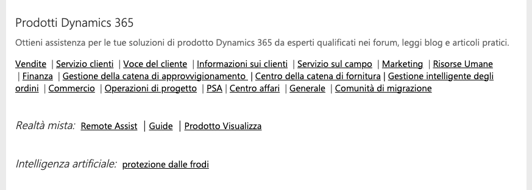

Windows 365

Dynamic 365

Comunity Windows

Forum centrale novità e dubbi Windows

Community del supporto Microsoft
Ci sono tanti trucchi Windows 10 che ti consentono di spremere al meglio l'ultima versione del sistema operativo di Microsoft.
Alcuni li puoi usare nella vita di tutti i giorni per migliorare e velocizzare la quotidianità, mentre altri torneranno assai utili in ambiti specifici ed è quindi più che consigliabile impararli subito.
Abbiamo raccolto venti trucchi per Windows 10 facili facili, adatti per tutti: da chi è più informatico a chi usa il computer solo per giocare al Solitario.
Il terminale ti offre una flessibilità e un controllo incredibili sul tuo sistema.
Ci sono tantissimi suggerimenti, trucchi, consigli e feature seminascoste che permettono di raggiungere un obiettivo preciso: quello di aumentare la vostra efficienza quando lavorate col pc (portatile o meno).
La prima versione pubblica di Windows 10 è stata rilasciata e pubblicata da Microsoft a fine luglio 2015. A distanza di sei anni ad oggi sono stati rilasciati ben 11 feature update, pacchetti di aggiornamento che in molti casi hanno via a via esteso le caratteristiche offerte dalle varie edizioni del sistema operativo.
I trucchi e segreti presentati nel seguito rappresentano solo una parte di tutti quelli di cui abbiamo parlato in passato e di alcuni – “inediti” – che stiamo pubblicando.
Ecco perché la nostra “carrellata” va considerata parziale
Non dimenticare di unirti alla comunità Windows. Partecipa a forum di discussione, chiedi aiuto, condividi le tue esperienze e impara dagli altri utenti.
Windows è un sistema operativo incredibilmente personalizzabile. Sperimenta, esplora e divertiti nel trovare nuovi trucchi e consigli che si adattino alle tue esigenze.
Per aprire una nuova istanza di Terminale Windows dalla riga di comando, puoi usare wt.exe. In alternativa, puoi anche usare l'alias di esecuzione wt.
La riga di comando wt accetta due tipi di valori, ovvero opzioni e comandi. Le opzioni sono un elenco di flag e di altri parametri che controllano il comportamento della riga di comando wt nel complesso. I comandi forniscono l'azione, o l'elenco di azioni delimitate da punti e virgola, che è necessario implementare. Se non specifichi un comando, per impostazione predefinita viene usato new-tab.
--help, -h, -?, /? Visualizza il messaggio della Guida.
--maximized, -M Avvia il terminale ingrandito.
--fullscreen, -F Avvia il terminale a schermo intero.
--window, -w window-id Esegue il comando specificato in una finestra specifica.
--focus, -f Avvia il terminale nella modalità messa a fuoco. Può essere combinato con maximized.
È possibile richiamare la tavolozza dei comandi digitando CTRL+MAIUSC+P. Questa operazione può essere personalizzata aggiungendo il commandPalette comando alle associazioni di chiavi.
I comandi iterabili consentono di creare più comandi contemporaneamente, generati da altri oggetti definiti nelle impostazioni. Attualmente è possibile creare comandi iterabili per i profili e le combinazioni di colori. In fase di esecuzione, questi comandi verranno espansi in un comando per ognuno degli oggetti del tipo specificato.
È attualmente possibile eseguire l'iterazione delle proprietà seguenti:
profiles name "name": "{profile.name}"
profiles icon "icon": "{profile.icon}"
schemes name "name": "{scheme.name}"
I comandi annidati consentono di raggruppare più comandi in un elemento nel riquadro comandi. L'esempio seguente raggruppa i comandi di ridimensionamento del tipo di carattere in un elemento del riquadro comandi denominato "Modifica dimensione del carattere...". {
"name": "Change font size...",
"commands": [
{ "command": { "action": "adjustFontSize", "delta": 1 } },
{ "command": { "action": "adjustFontSize", "delta": -1 } },
{ "command": "resetFontSize" },
]
}
Facoltativamente, è possibile aggiungere un'icona a un comando definito in settings.json visualizzato nel riquadro comandi. Questa operazione può essere eseguita aggiungendo la icon proprietà all'azione. Le icone possono essere un percorso di un'immagine, un simbolo di Asset Segoe MDL2 o qualsiasi carattere, inclusi gli emoji.{ "icon": "C:\\Images\\my-icon.png", "name": "New tab", "command": "newTab", "keys": "ctrl+shift+t" },
{ "icon": "\uE756", "name": "New tab", "command": "newTab", "keys": "ctrl+shift+t" },
{ "icon": "⚡", "name": "New tab", "command": "newTab", "keys": "ctrl+shift+t" }
È possibile aggiungere un'associazione di chiavi personalizzata per richiamare direttamente la tavolozza dei comandi nella modalità della riga di comando. { "command": "commandPalette", "launchMode": "commandLine", "keys": "" }
Quando Apple ha lanciato il suo nuovo macOS Big Sur molti utenti di Windows hanno rimarcato il fatto di come l’implementazione del cosiddetto Fluent design non sia stata ancora completamente applicata a livello di sistema operativo.
In attesa del rinnovamento dell’interfaccia di Windows 10 del quale si è più volte parlato (è atteso con il rilascio della versione 21H2 del prossimo autunno: Microsoft rinnoverà l’interfaccia del sistema operativo con Windows 10 21H2) facciamo il punto sulle principali possibilità di personalizzazione che offre Windows 10 e che possono essere applicate sia utilizzando gli strumenti di sistema che risorse di terze parti.
Il menu Start di Windows 10 offre già oggi ampie possibilità di personalizzazione anche se in futuro subirà ancora nuove modifiche: Le piastrelle del menu Start di Windows 10 non moriranno: saranno diverse.
Con una semplice modifica a livello di registro è possibile attivare la cosiddetta “ricerca immersiva” che si ispira all’impostazione di Spotlight su macOS con la finestra di ricerca che viene visualizzata al centro dello schermo.
Dal punto di vista grafico, l’elemento di spicco dell’interfaccia di un sistema operativo è sicuramente il desktop, che può essere personalizzato praticamente in tutti i suoi aspetti, dallo sfondo alle icone, intervenendo manualmente o utilizzando dei temi “preconfezionati”.
Sul desktop mancano alcune icone di sistema che ritieni utili, come la cartella utente o la cartella Rete, e vorresti aggiungerle o, al contrario, intendi liberarti definitivamente di quelle già presenti (ad es. Questo PC)? Puoi effettuare quest’operazione in modo semplicissimo: anche in questo caso, devi fare clic destro in un punto vuoto del desktop, scegliere la voce Personalizza dal menu che compare e selezionare, nella schermata successiva, la voce Temi
L’aspetto delle cartelle in Windows 10 non ti piace? Anche in questo caso, puoi personalizzarlo in modo estremamente semplice: per prima cosa, avvia Esplora File (l’icona a forma di cartella gialla collocata nella barra delle applicazioni, in fondo allo schermo) e, tramite essa, spostati nel percorso in cui risiede la cartella che vuoi personalizzare.
Ci sono diversi forum dedicati a Windows dove puoi iscriverti per partecipare alle discussioni e ottenere supporto dalla comunità. Ecco alcuni forum popolari:
MicrosoftQuestions Questo forum è uno dei più grandi e attivi per gli utenti di Microsoft. Offre una vasta gamma di sezioni e discussioni super attuali.
TenForum Questo forum è specificamente dedicato agli utenti di Windows10, una delle distribuzioni più popolari.
Central Forum Questo forum è dedicato agli utenti di Windows, una distribuzione nota per la sua flessibilità e personalizzazione. Qui puoi trovare discussioni su problemi tecnici e suggerimenti per l'ottimizzazione del sistema.
Dynamic365 Questo forum è dedicato agli utenti di windows 365.Personalizza rapidamente la tua community per trovare i contenuti che cerchi.